Jeunes architectes, sommes-nous des néo-réacs ?
Clarisse Protat
Club ASAP 08
juin 2025
Temps de lecture : 10 min
S’il y a une avant-garde aujourd’hui en architecture en France comment s’incarne-t-elle ?
Pour répondre reprenons les 2 grandes tendances actuelles en architecture : les néo-rationalistes d’une part et les revivalistes du vernaculaire d’autre part (1). Nous allons expliquer ces 2 courants mais surtout nous demander pourquoi nous pouvons les ressentir comme assez, voire très, réactionnaires.
C’est parti pour notre auto-critique collective !
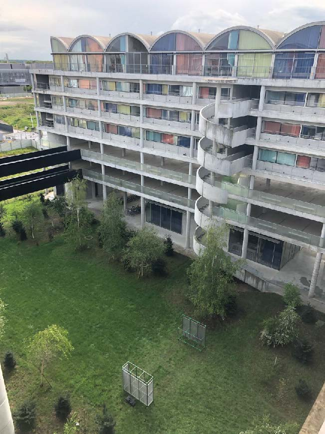
Les néo-rationalistes prônent, comme leur leur nom l’indique une rationalisation des modes constructifs :
• une architecture extrêmement tramée en plan et aussi en élévation
• des structures poteaux-poutres béton avec des éléments ajoutés (rideaux, panneaux-bois, parois en polycarbonate,…) pour créer des sous-espaces
Bien que nous les critiquions souvent dans les clubs ASAP, il semblerait que
nous, jeunes architectes et étudiants, sommes encore dans une fascination
totale pour leur esthétique.*
Pourquoi cette adhésion au néo-rationalisme serait « réac » ? Premièrement parce que c’est le retour à une esthétique, béton à fond les ballons (mais comme c’est bas carbone on est sauvé !) donc de fait complètement déconnectée des urgences socio-climatiques. Deuxièmement, c’est 100% dépendant d’une économie capitaliste dont on peine à s’extirper. Et troisièmement, c’est lié à des modes constructifs qui ne favorisent absolument pas l’empouvoirement des ouvriers (sur les chantiers ou dans les usines si c’est du préfabriqué).
Voilà pour les aspects les plus évidents. Mais le néo-rationalisme est surtout pas du tout décorrélé d’une idéologie politique, comme nous allons l’évoquer plus tard.
* Reste à définir si c’est par réelle adhésion ou par influence des médias d’architecture les plus mainstream qui continuent de les ériger en modèles à suivre… Mais ceci est un autre débat.
Ces néo-rationalistes, ils ne se définissent pas tellement comme ça eux-mêmes.
Certains le prennent même comme une insulte quand on pointe du doigt leur réalisation en les définissant comme tel. Ce déni, en plus de ne pas du tout aider le partage de la culture architecturale et l’acculturation d’un public plus large, n’aide pas non plus le dialogue avec les maîtres d’ouvrage. « La mairie de Bobigny préfère-t-elle que son nouveau centre périscolaire soit moderne ? post-moderne ? déconstructiviste ? »
Affirmer et nommer le courant associé à son bâtiment permettrait peut-être que, dans les jurys de concours, l’architecte membre du jury ne sente pas comme la seule caution de la qualité esthétique et stylistique. Cette petite digression illustre que si l’avant-garde est si compliquée à cerner aujourd’hui, c’est parce qu’il y a cette perte d’affirmation du style et des catégories dans le monde professionnel de l’architecture.*
* Attention nous ne parlons pas ici de conception mais de langage : assumer nommer les choses.
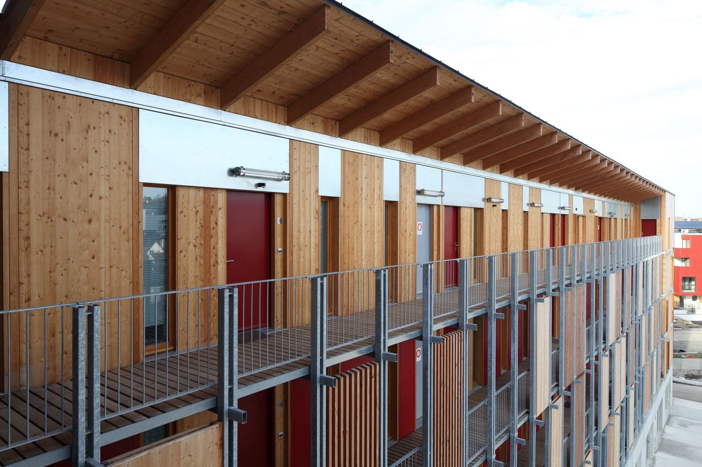
De l’autre côté du spectre : il y a les pro-vernaculaires.
La nomination de Simon Teyssou au Grand prix de l’urbanisme en 2023 illustre un consensus envers cette approche.
Nous vous renvoyons à ce sujet au super article Margaux Darrieus dans AOC media qui décrit cet attrait pour ce qu’elle appelle le vernaculaire tout en n’en démontrant les écueils.
« En convoquant des modèles figés dans le passé, l’argumentaire vernaculaire tel qu’il est souvent diffusé actuellement en architecture entretient une vision décliniste de la société.
[...] Le retour de l’inspiration vernaculaire en architecture peut être lue comme une traduction des discours politiques qui traversent aujourd’hui un monde qui s’organise autour d’une nostalgie des identités perdues, construites en négatif, c’est-à-dire à partir de ce qu’elles rejettent. »
Margaux Darrieus, "L’architecture et la tentation du vernaculaire", AOC media, 2025
Dans cet article, Margaux Darrieus précise que ce n’est pas tant le problème du vernaculaire que des représentations qu’on s’en fait, ainsi que certains oublis...
Une vision idéalisée et passéiste ? Elle fait le parallèle avec le régionalisme critique, dans lequel il y avait une conscientisation du rapport dominants/dominés.* Ces questions décoloniales étant trop souvent oubliées par les approchent vernaculaires actuelles.
Aujourd’hui les pro-vernaculaires incarnent plutôt un refuge vers les espaces ruraux (il s’agit d’ailleurs d’un biais, le vernaculaire n’étant pas forcément associé à la campagne). On retrouve alors l’idée d’opposition à la ville et son fonctionnement : « de réaction à... ». Un discours qui séduit et que beaucoup décident de rejoindre.
* Dans le cas du vernaculaire : les dominants qui s’approprient parfois les cultures des dominés. Encore une fois, voir les références de l’article de Margaux Darrieus.
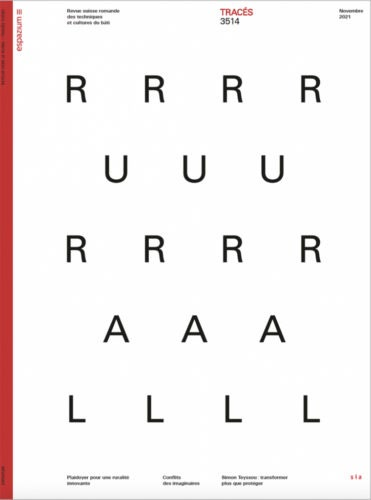
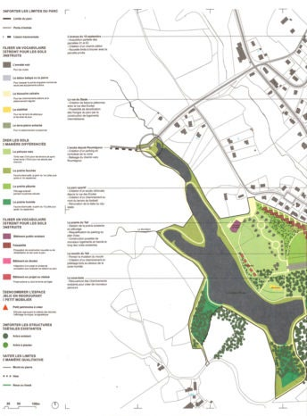
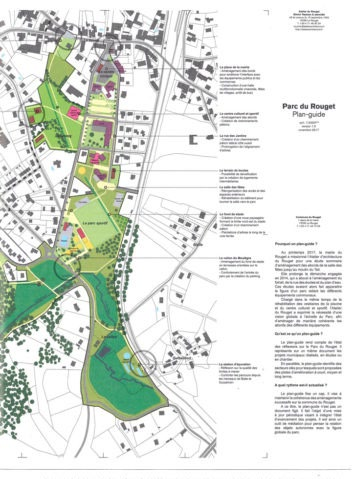
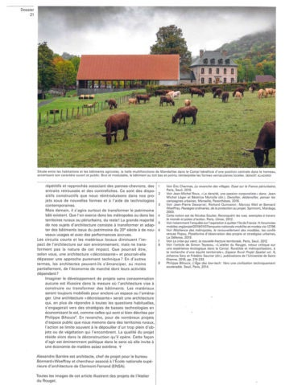
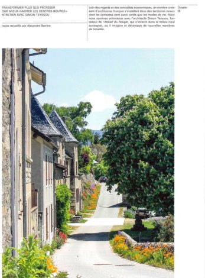
Dans tous les cas, on ne peut pas faire comme si les styles architecturaux sont décorrélés d’idéologies politiques.
Rappelons que certaines de ces idéologies sont dangereuses. On a vu la récupération du rationalisme italien par les fascistes de la fin des années 20 avec le Gruppo 7. Si le rationalisme n’est évidemment pas associé qu’à ce régime, le lien entre avant-garde et architecture fasciste italienne se pose très clairement.*
Il semble important de ne pas minimiser les liens architecture/politique du passé et d’être conscient de l’imaginaire et de l’historique qu’un style trimbale avec lui, d’autant plus en période de pré-élection et d’accroissement de la menace fasciste.
Pour prendre un exemple plus proche de nous, regardons l’opération urbaine du quartier des Docks à Saint Ouen (création de logements et l’aménagement du quartier).
En 2014, un nouveau maire UDI (droite) est élu et remplace la mairie communiste qui avait lancé le projet. C’est William Delannoy et il va complétement changer les directives esthétiques en s’inspirant largement de Levallois-Peret et Courbevoie : immeubles avec façades en pierres agrafées blanches. Le maire UDI emmène carrément l’équipe d’aménageur à Levallois-Peret en disant « c’est ça que je veux ».*
Le politique qui s’empare d’un style, mais même plus que ça, l’architecture qui se met au service d’une idéologie politique : impossible de faire comme si ça n’existe pas ou bien de se dire que c’est la crise et qu’on n’a pas le choix.
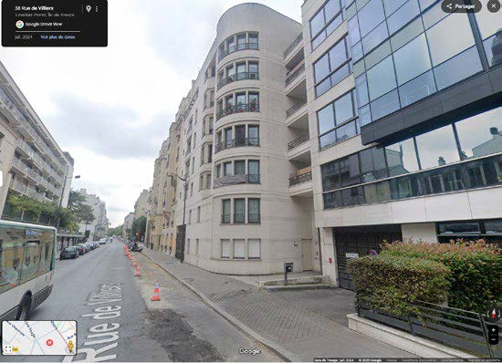
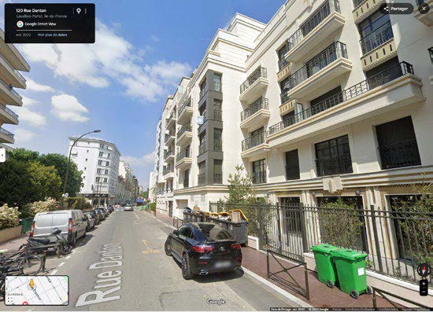
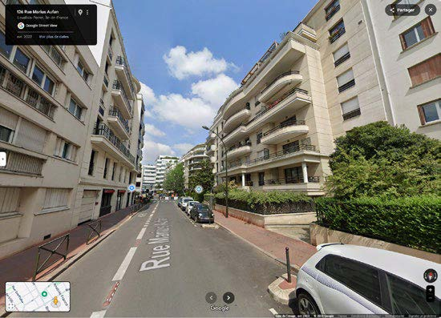
Pour sortir de la tentation réactionnaire, et ne pas rester bloquer entre les néo-rationalistes et les revivalistes du vernaculaire, peut-être faut-il qu’on s’approprient les outils et non les images. Ainsi on n’est pas dans une représentation idéalisée, mais bien dans une démarche critique. Ni mimétisme, ni réaction à...
Ça tombe bien, nous avons dit dans l’introduction de ce club (7) que l’avant-garde se caractérise justement dans le maintien et la même la sauvegarde de ses propres outils.
Nous pouvons mettre un exemple d’outils sur la table: le relevé typomorphologique. Cet outil a notamment beaucoup été utilisé lors de la réhabilitation du coeur historique de Bologne dans les années 60. Il y a un aspect à la fois très culturel et intellectuel qui demande un certain bagage, et en même temps c’est de la recherche concrète sur le terrain, de l’observation et la considération des savoirs-faire et des contraintes contextuelles.
Prenons un autre outil plus contemporain dont certain se saisissent : el famoso tableur Excel.
On pense aux travaux de Jan De Vylder et Inge Vinck, qui loin d’être anecdotique, constituent une bonne base pour lancer une avant-garde. Et c’est bien l’appropriation de ces outils juridico-économiques, omniprésents dans la pratique de l’architecture, qui le permet. Si avant-garde il y a, c’est celle qui s’empare des d’outils traditionnels mais aussi des outils du capitalisme et qui s’en servent pour détourner l’ordre et les systèmes en place : des sortes de pirates des villes.
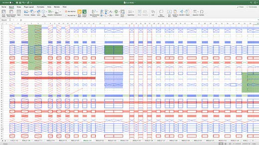
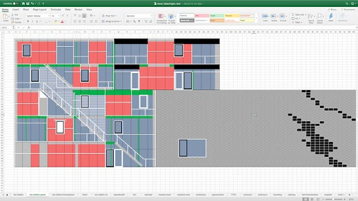
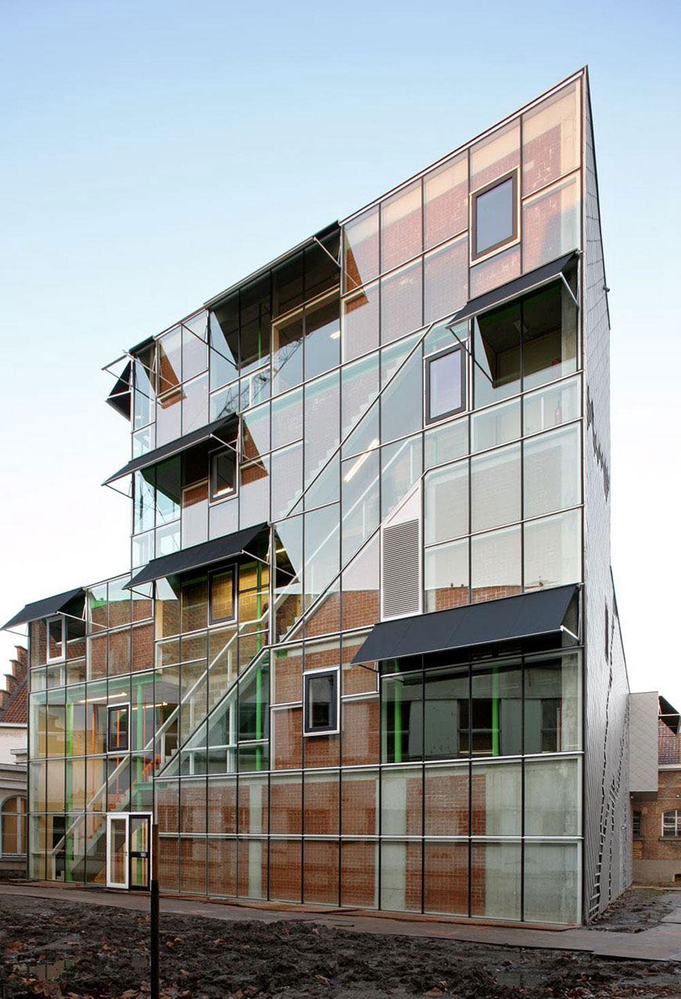
Une telle image est ironiquement montrée dans le court métrage « The Crimson Permanent Assurance » où une bande de papys pirates très low-tech attaquent les jeunes hommes d’affaire d’un gratte-ciel à bord de leur bateau-bâtiment,
notamment grâce à des canons à formulaires administratifs.
Qui a dit que l’avant garde est forcément incarnée par des jeunes ?
L'ensemble des articles issus du club asap 08 sont disponibles ci-dessous:
| # | Titre | Auteur | |
|---|---|---|---|
| 800 | Les rôles de l'avant-garde | Louis Fiolleau | Club #08 |
| 801 | Jeunes architectes, sommes-nous des néo-réacs ? | Clarisse Protat | Club #08 |
| 802 | Evolution des Révolutions | Simon Ganne | Club #08 |
| 803 | Avant-Post | Salma Bensalem | Club #08 |
| 804 | Perdre le pouvoir | Marie Frediani | Club #08 |
| 805 | Georges Bataille contre la frugalité architecturale | Thomas Flores & Mathias Palazzi | Club #08 |
| 806 | Manifeste pour une avant-garde qui ne dit pas son nom | Morgane Ravoajanahary | Club #08 |
| 807 | Pas d'avant-garde dans un seul édifice | Hugo Forté | Club #08 |